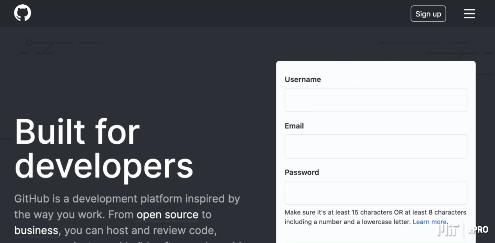
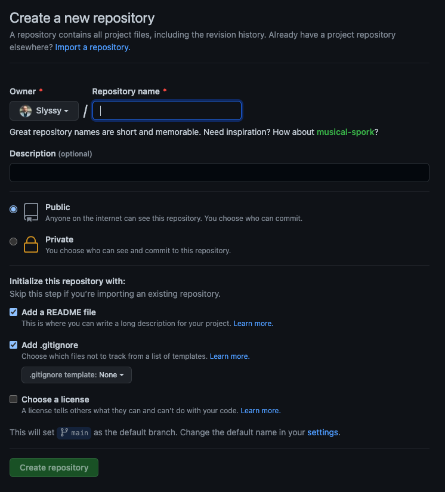
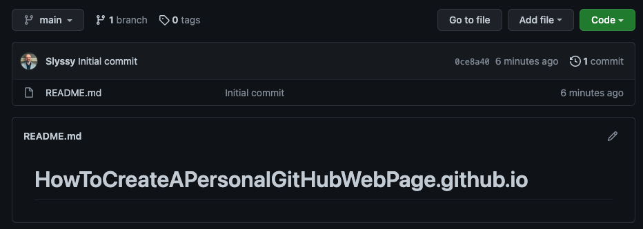
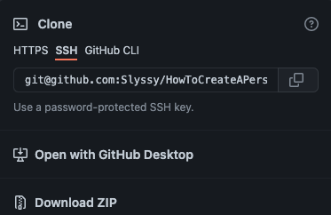

Create a GitHub account by filling out the Username, Email and
Password.
Click "Sign Up".

Step2: Create a New Repository
Click on the green box that says "New" in the repositories section.
This should take you to a page that looks like this.

Enter a repository name.
When naming your repository, use the following syntax.
[yourusername].github.io
Note: You should always include a ReadMe file, and if you want to add
a gitignore file you can select the checkbox. If you create .gitignore
file, you will need to select a template. After you select your option
click "Create repository". That will take you to a page like this.

Step3: Clone Your New Repository to Your Local Machine
At this point, you simply need to select the green "Code" button.
That will pop up a dialogue box like this.

Copy the SSH Link.
Now you will need to open your terminal and navigate to where you
want your directory on your local machine.
In your terminal, type
git clone [paste the ssh link you copied] and press "Enter".
Your terminal should look like this.